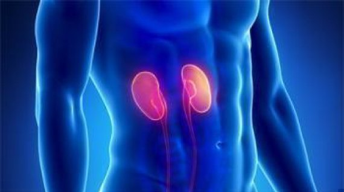

Применение черного тмина при заболеваниях мочеполовой системы
Заболевания почек
1 чайную ложку листьев брусники поместить в фарфоровый чайник и заварить стаканом крутого кипятка, после охлаждения добавить в настой 1 чайную ложку масла черного тмина и 1 столовую ложку меда. Принимать по полстакана 2 раза в день (утром и вечером) перед едой.
Камни в почках
100 г. масла черного тмина, 300 г. меда тщательно перемешать. В половине стакана воды растворить 2 чайные ложки смеси. Принимать утром натощак 1 раз в день.
При наличии песка и камней в почках
- 100 г. масла черного тмина, 200 г. меда, 200 г. лимонного сока смешать и настаивать десять дней. Слить в бутылки из темного стекла. Хранить в темном прохладном месте. Употреблять 3 раза в день по столовой ложке в течение двух недель. Курс повторяют через неделю.
- Один килограмм свежей петрушки с корнями и один Крупный корень сельдерея мелко нарезать, добавить 1 кг натурального пчелиного меда b 1 л воды, довести до кипения на медленном огне, помешивая. Настаивать три дня. Затем добавить еще 1 л воды, снова довести до кипения, процедить d теплом виде. Добавить 100 г масло черного тмина. Полученный состав принимать по три столовые ложки 3 раза в день перед едой в течение двух недель. Через две недели курс повторить.
При заболеваниях мочеполовых путей
Столовую ложку цветков алтея поместить в фарфоровый чайник, залить стаканом крутого кипятка и настоять в течение 15-20 мин., добавить столовую ложку меда и чайную ложку черного тмина. Принимать по 1/3 стакана 3 раза в день.